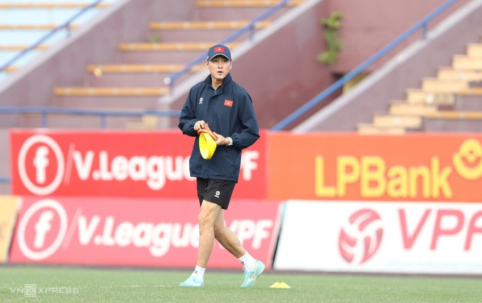

Mỹ – Iran đạt thỏa thuận về ngừng bắn, mở cửa eo biển Hormuz trong hai tuần
Mỹ và Iran đồng ý ngừng bắn trong hai tuần, Tehran sẽ cho phép tàu thuyền đi qua eo biển Hormuz trong thời gian này "với sự điều phối từ lực lượng vũ trăng".
Trợ lý Lee Jung-soo rời đi sau khi hết hợp đồng với LĐBĐ Việt Nam (VFF). Theo nguồn tin của VnExpress, ông đã nhận lời dẫn dắt một CLB ở Đông Nam Á. Trợ lý Lee bắt đầu làm việc ở đội tuyển quốc gia và U23 Việt Nam từ tháng 3/2025. Sau một năm, ông cùng bóng đá Việt Nam giành vé dự vòng chung kết Asian Cup 2027, vô địch U23 Đông Nam Á 2025, HC vàng SEA Games 33 và đứng thứ ba U23 châu Á 2026.

Một trong những đóng góp quan trọng nhất của trợ lý Lee là nâng tầm các tình huống cố định, để hạn chế tối đa bàn thua và trở thành vũ khí săn bàn. Tình huống cố định đem về 5 trong 17 bàn (29,4%) sau 8 trận cho ĐTQG, 7 trong 31 bàn (22,5%) sau 17 trận cho đội U23. HLV Kim Sang-sik cho biết đã cùng trợ lý Lee Jung-soo làm việc kỹ về chi tiết này, với phương châm giúp các cầu thủ nắm ý tưởng truyền đạt một cách nhanh nhất, đơn giản nhất, thay vì phức tạp hóa vấn đề. HLV Kim nói: "Chúng tôi cũng học hỏi từ những đội mạnh về bóng cố định. HLV Lee rất tập trung vào các vấn đề tăng cường nhân sự che chắn cho hàng thủ. Ông ấy hiểu chuyện ghi bàn quan trọng, nhưng đề cao việc làm thế nào để không thủng lưới đặc biệt ở các tình huống cố định. Nên chúng tôi hướng dẫn cầu thủ phải tạo áp lực lên đối thủ, bằng cách đeo bám, túm người, kéo, đẩy".
Ông Lee Jung-soo đến với bóng đá Việt Nam trước HLV Kim Sang-sik, trong vai trò trợ lý tại CLB TP HCM từ tháng 12/2018 đến tháng 7/2020 dưới thời HLV Chung Hae-seong. Sau đó, ông về Hàn Quốc làm trợ lý HLV tại Suwon FC đến tháng 12/2023. Thời còn thi đấu, Lee Jung-soo là trung vệ hàng đầu của Hàn Quốc. Ông khoác áo ĐTQG 54 trận từ năm 2008 đến 2013, đá chính tại World Cup 2010. Lee góp công lớn ở vòng bảng khi mở tỷ số ở trận ra quân thắng Hy Lạp 2-0, rồi gỡ hòa 1-1 trong trận hòa Nigeria 2-2 ở lượt cuối.
Ở cấp CLB, ông Lee Jung-soo là gương mặt quen thuộc tại K-League 1, thi đấu cho FC Seoul, Incheon United và Suwon Samsung Bluewings. Năm 2009, ông sang Nhật Bản chơi cho Kyoto Sanga rồi Kashima Antlers. Từ mùa 2010-2011 đến 2015-2016, ông sang Qatar khoác áo Al Sadd, từng cùng đội này thắng Jeonbuk Hyundai Motors của chính Kim Sang-sik ở chung kết để vô địch AFC Champions League 2011. Trong giai đoạn cuối sự nghiệp, Lee chơi cho Suwon FC hai mùa, rồi sang Mỹ đá cho Charlotte Independence năm 2018 trước khi giải nghệ.

Mỹ và Iran đồng ý ngừng bắn trong hai tuần, Tehran sẽ cho phép tàu thuyền đi qua eo biển Hormuz trong thời gian này "với sự điều phối từ lực lượng vũ trăng".

Người dân Iran tập trung trên đường phố Tehran, vậy có và hô khẩu hiệu sau khi lệnh ngừng bắn hai tuần với Mỹ được công bố.

Nằm ở bộ nam eo biển Hormuz, cách Iran gần 34 km, bán đảo Musandam của Oman đang chứng kiến những hệ lụy về kinh tế và đời sống khi xung đột bùng phát.